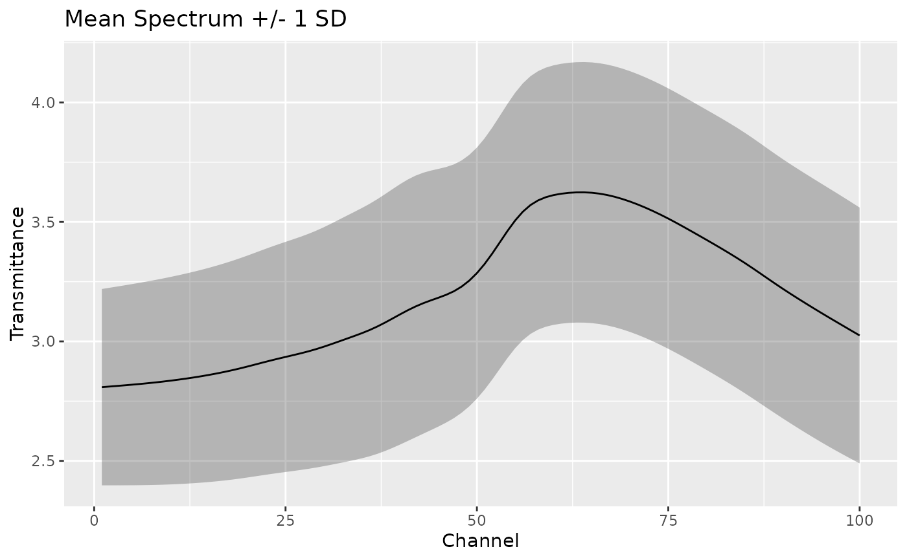

measure_summarize() computes summary statistics for each measurement
location across all samples. This is useful for understanding your data,
computing reference spectra, or identifying outliers.
Arguments
- .data
A data frame containing one or more
measure_listcolumns.- .cols
<
tidy-select> Columns to summarize. Defaults to allmeasure_listcolumns.- .fns
A named list of summary functions. Each function should accept a numeric vector and return a single value. Default is
list(mean = mean, sd = sd).- na.rm
Logical. Should NA values be removed? Default is
TRUE.
Details
This function does NOT transform data; it summarizes it. Common uses:
Mean spectrum: The average spectrum across all samples
Reference spectrum: For MSC-style corrections
Variability: Standard deviation at each wavelength
Quality control: Identify problematic wavelength regions
Examples
library(recipes)
library(ggplot2)
rec <- recipe(water + fat + protein ~ ., data = meats_long) |>
update_role(id, new_role = "id") |>
step_measure_input_long(transmittance, location = vars(channel)) |>
prep()
baked_data <- bake(rec, new_data = NULL)
# Compute mean and SD at each wavelength
summary_stats <- measure_summarize(baked_data)
summary_stats
#> # A tibble: 100 × 3
#> location mean sd
#> <int> <dbl> <dbl>
#> 1 1 2.81 0.411
#> 2 2 2.81 0.413
#> 3 3 2.81 0.416
#> 4 4 2.82 0.418
#> 5 5 2.82 0.421
#> 6 6 2.82 0.424
#> 7 7 2.83 0.426
#> 8 8 2.83 0.429
#> 9 9 2.83 0.432
#> 10 10 2.84 0.434
#> # ℹ 90 more rows
# Visualize mean spectrum with confidence band
ggplot(summary_stats, aes(x = location)) +
geom_ribbon(aes(ymin = mean - sd, ymax = mean + sd), alpha = 0.3) +
geom_line(aes(y = mean)) +
labs(x = "Channel", y = "Transmittance", title = "Mean Spectrum +/- 1 SD")

# Custom summary functions
measure_summarize(
baked_data,
.fns = list(
median = median,
q25 = function(x) quantile(x, 0.25),
q75 = function(x) quantile(x, 0.75)
)
)
#> # A tibble: 100 × 4
#> location median q25 q75
#> <int> <dbl> <dbl> <dbl>
#> 1 1 2.75 2.51 3.01
#> 2 2 2.76 2.51 3.01
#> 3 3 2.76 2.51 3.01
#> 4 4 2.76 2.52 3.02
#> 5 5 2.76 2.52 3.03
#> 6 6 2.76 2.52 3.03
#> 7 7 2.76 2.52 3.04
#> 8 8 2.77 2.52 3.05
#> 9 9 2.77 2.52 3.05
#> 10 10 2.77 2.52 3.06
#> # ℹ 90 more rows